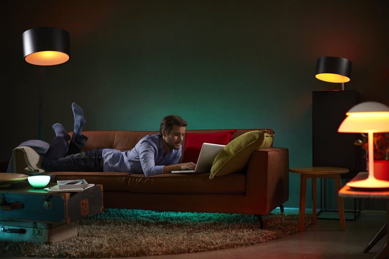
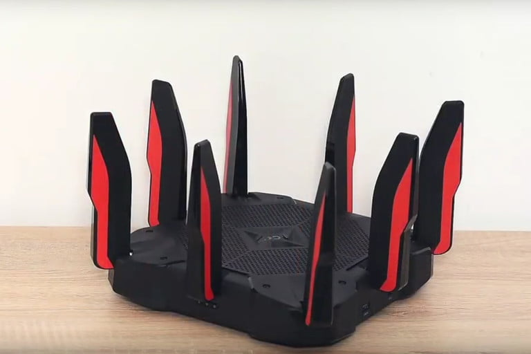

What is Wi-Fi?
Everywhere you go, you’re likely to hear the term “Wi-Fi.” Maybe it’s the restaurant that claims to have free Wi-Fi or a friend who asks for the Wi-Fi password. You use Wi-Fi all the time, but there’s a good
chance that you don’t really know what it is or how it works. Some people might tell you that Wi-Fi is just another term for the internet, but that’s not exactly true.
There’s a lot to learn about how wireless technology works and how you
can use Wi-Fi to enhance your experience on the web.
How does Wi-Fi work?

Although Wi-Fi is typically used to access the internet on portable devices like smartphones, tablets, or laptops, in actuality, Wi-Fi itself is used to connect to a router or other access point, which in turn provides internet access. Wi-Fi
is a wireless connection to that device, not the internet itself. It also provides access to a local network of connected devices, which is why you can print pictures wirelessly or look at a video feed from Wi-Fi connected cameras with no
need to be physically connected to them.
Instead of using wired connections like Ethernet, Wi-Fi uses radio waves to transmit information at specific frequencies, most typically at 2.4GHz and 5GHz. However, there are many others used in
more niche settings. Each frequency range has several channels that wireless devices can operate on, helping to spread the load so that individual devices don’t see their signals crowded or interrupted by other traffic — although that does
happen on busy networks.
What is 802.11?
Often talked about in conjunction with Wi-Fi, 802.11, or IEEE 802.11, a set of protocols specifies communications that can occur on a Wi-Fi network on various wireless frequencies.
Before the recent change in the naming convention, 802.11 was also a significant component of naming each successive generation of Wi-Fi connectivity. Typically followed by a letter or series of letters, it continues to be part of the
technical name for each Wi-Fi generation. However, there are now simpler naming schemes used are now simpler naming schemes used, labeled by generations.
What devices use Wi-Fi?
Wi-Fi devices are everywhere. Most routers offer Wi-Fi connectivity, and almost any product with smart functions relies
on it for a steady and robust connection to the internet. Virtually all modern smartphones support it, as do tablets, laptops, and some desktops. It can be added to computers using USB dongles too.
Smart TVs almost always come with support for Wi-Fi connectivity, and many Internet of Things devices like smart fridges and cameras do too. There are also Wi-Fi printers, scanners, clocks, games consoles, digital radios, and even cars. The
use cases for Wi-Fi are near-infinite when you consider the vast array of connected services.
There are also what you could call Wi-Fi-adjacent devices. These devices use radio waves very close to the traditional Wi-Fi spectrum but aren’t considered Wi-Fi because they don’t connect to the internet the same way. A good example would be
the Zigbee protocol, which was created for early low-power smart devices to communicate, and still exists in some forms today. Bluetooth is another example – it operates on the 2.4GHz frequency like Wi-Fi but is used for connecting two
short-range devices. Then, Wi-Fi Direct uses Wi-Fi signals for a private, direct connection but doesn’t create a more extensive online network.
Moving to Wi-Fi 6

Wi-Fi 6 is more than just a new naming convention — it’s also a massive upgrade to the Wi-Fi standard that is changing how Wi-Fi works. Some of the
important things that Wi-Fi 6 is bringing to Wi-Fi everywhere are:
Lower latency:his means data will flow more smoothly with fewer delays, improving the experience overall.
Much higher speeds:Wi-Fi 6 significantly improves data transfer speeds when connecting to a single device — our tests found a 60% improvement. But more than that, Wi-Fi 6 is designed to be used in more
crowded spaces where many people may be on the same network, so you should see a drastic improvement in public Wi-Fi, especially in crowded areas.
Better battery life: Because Wi-Fi 6 has improved efficiency in locating and identifying devices, it contributes to overall better battery life for each device. This is because your device is now
spending less time searching for Wi-Fi.
Better household Wi-Fi: Wi-Fi 6 and its advanced MU-MIMO is fantastic for average homes. Connect up to eight devices instead of shooting data at individual devices. The
high-quality connection has few problems and more stability.
Wi-Fi 6-compatible routers are growing, but it’s not available for all devices. Technology upgrades still require some time to ensure all devices can use Wi-Fi 6 as their default. The 802.11 connection is still the top seller, but you can
switch when you want.
Your router and device need to be compatible with the standard to reap all the Wi-Fi 6 benefits. Unfortunately, there aren’t many compatible devices. Until technology catches up, Wi-Fi 6 won’t be a common standard for a while.